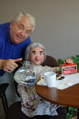

FCM 2011 Report
7/18/2011
{kind=link}

From Dr. Jeff Scott
FCM Ventriloquist Section Coordinator
FCM Ventriloquist Section Coordinator
(Photo left: Jeff with Ida Claire)
The talking coin purses and two cent Maher Studios collectible coins were a big hit among the vents and aspiring vents at FCM this past week in Marion, Indiana. It was fun to watch the new vents pick up that coin purse and immediately begin to squeeze it to make the lips move. What a convenient little novelty figure.
The numbers of folks taking vent workshops was up this year with some classes having as many as 40. While small compared to Vent Haven, the encouraging small group feel, coupled with the wide variety of other classes you can take at the Fellowship of Christian Magicians (magic, clowning, puppets, drama, storytelling, juggling, face painting, balloon twisting, etc.) makes FCM a great choice for individuals and families. Next year the FCM convention will be July 30-Aug. 3rd, so vents can double up by going to Vent Haven and then FCM. The vent section will offer 14 different workshops during the days of the convention including hands on classes on making novelty vent figures and personal performances and encouragement.
In the Late, Late Vent get together this year, Steve Parker led a tribute to Bill Andersen. Videos of Bill performing with his various figures were shown nightly during the week and to a good group. Who will forget Wally Nutt or Hildeguared? Bill, as you well know, was a pro;ific compiler of jokes and vent dialogues. His material was always clean, funny, and stood the test of time.
As you know, the FCM has an evening show for the community and two vents did an outstanding job on the big stage. Steve Parker did an exceptional tribute to Edgar Bergen and Charlie MCarthy with his figure that may have been one of Bergen's actual Charlies. Also on stage was singer/ventriloquist Barbie Franklin with her friend, Nicky. She represented vents well with outstanding lip control and hard figure manipulation. It was a good week for everyone.
The numbers of folks taking vent workshops was up this year with some classes having as many as 40. While small compared to Vent Haven, the encouraging small group feel, coupled with the wide variety of other classes you can take at the Fellowship of Christian Magicians (magic, clowning, puppets, drama, storytelling, juggling, face painting, balloon twisting, etc.) makes FCM a great choice for individuals and families. Next year the FCM convention will be July 30-Aug. 3rd, so vents can double up by going to Vent Haven and then FCM. The vent section will offer 14 different workshops during the days of the convention including hands on classes on making novelty vent figures and personal performances and encouragement.
In the Late, Late Vent get together this year, Steve Parker led a tribute to Bill Andersen. Videos of Bill performing with his various figures were shown nightly during the week and to a good group. Who will forget Wally Nutt or Hildeguared? Bill, as you well know, was a pro;ific compiler of jokes and vent dialogues. His material was always clean, funny, and stood the test of time.
As you know, the FCM has an evening show for the community and two vents did an outstanding job on the big stage. Steve Parker did an exceptional tribute to Edgar Bergen and Charlie MCarthy with his figure that may have been one of Bergen's actual Charlies. Also on stage was singer/ventriloquist Barbie Franklin with her friend, Nicky. She represented vents well with outstanding lip control and hard figure manipulation. It was a good week for everyone.